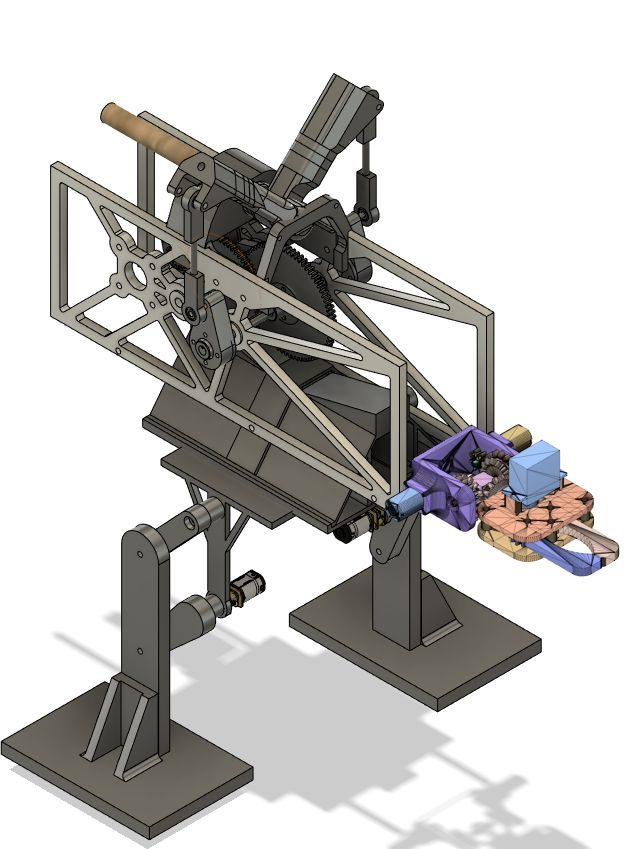
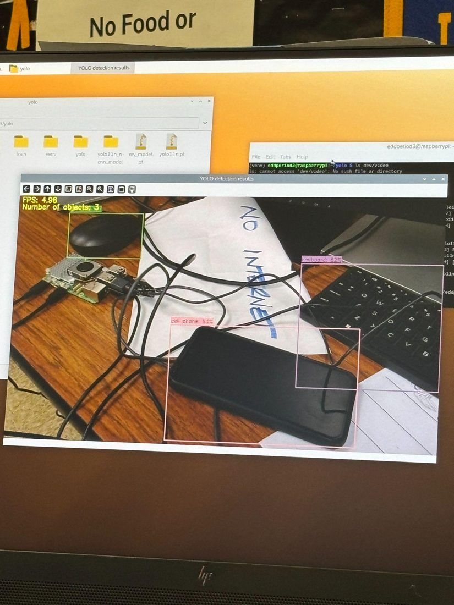
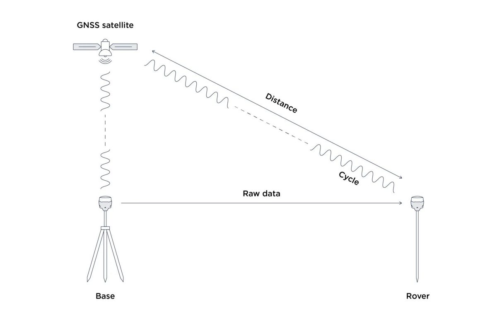
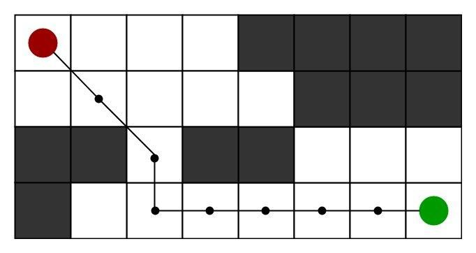
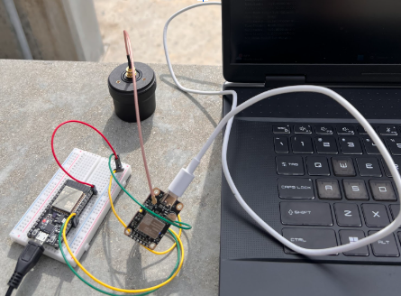
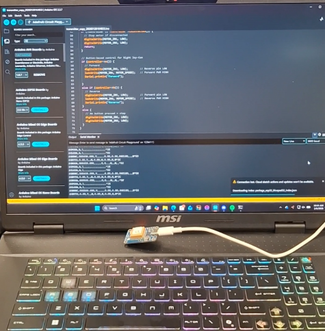

case study
my senior capstone. our student-run engineering company, arcturus industries, built corvus, which is a robot raven that flies, walks, and grabs stuff on its own for the 2026 carpa challenge. i was on programming, working on navigation and vision.
our team documentary. the bird, the mission, the lab.


the challenge
brief: build an ornithopter (it flaps to fly) that looks like a raven and runs the whole mission by itself, with a kill switch just in case.
the part i worked on
rtk gps gets position down to centimeters. it lags a bit, so we fuse it with imu data in a kalman filter.
yolo looks at each camera frame and says what's there, where, and how sure it is. weak guesses get tossed, and distance comes from box size.
every find gets real coordinates and goes on a map with its point value.
a* picks the shortest path to the next item: distance so far + distance left.


hardware
in progress

